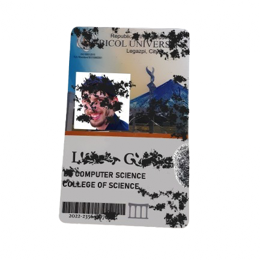
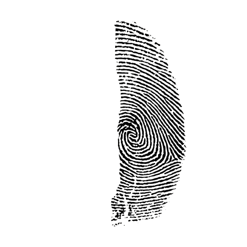
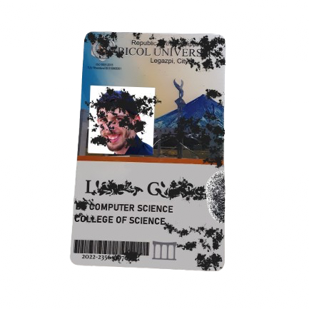
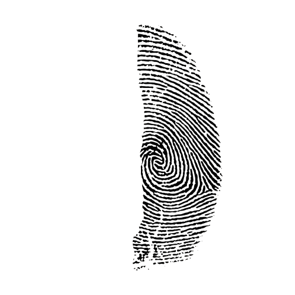
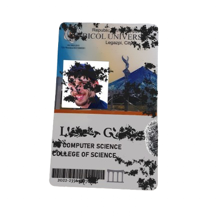
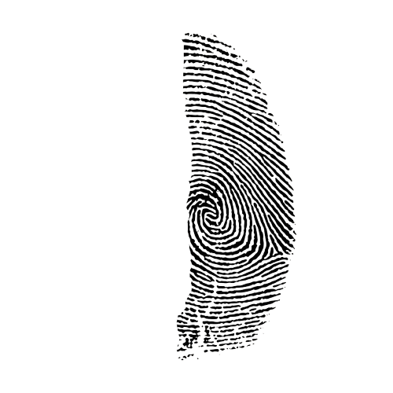
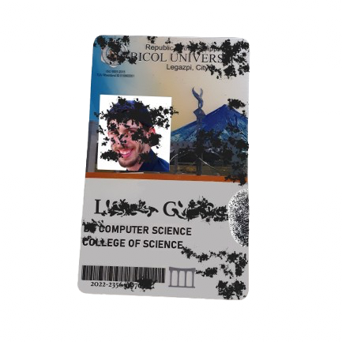
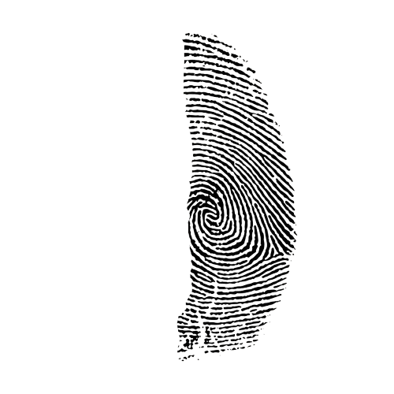

Vincent's Laptop
Enter 9-digit access code:
Remote Access Point Created: 192.168.0.42:8080
Activity Log:
Verbal Admission: "I just… I was paid to set up remote access. That’s all."
⚠️ Note: Vincent had credentials to security logs and may have tampered with surveillance footage.


These files were flagged for further review but never made it to the official report. "We were supposed to circle back to this... but no one ever did."
üìù Undeclared Photos
üìù Recovered Clips